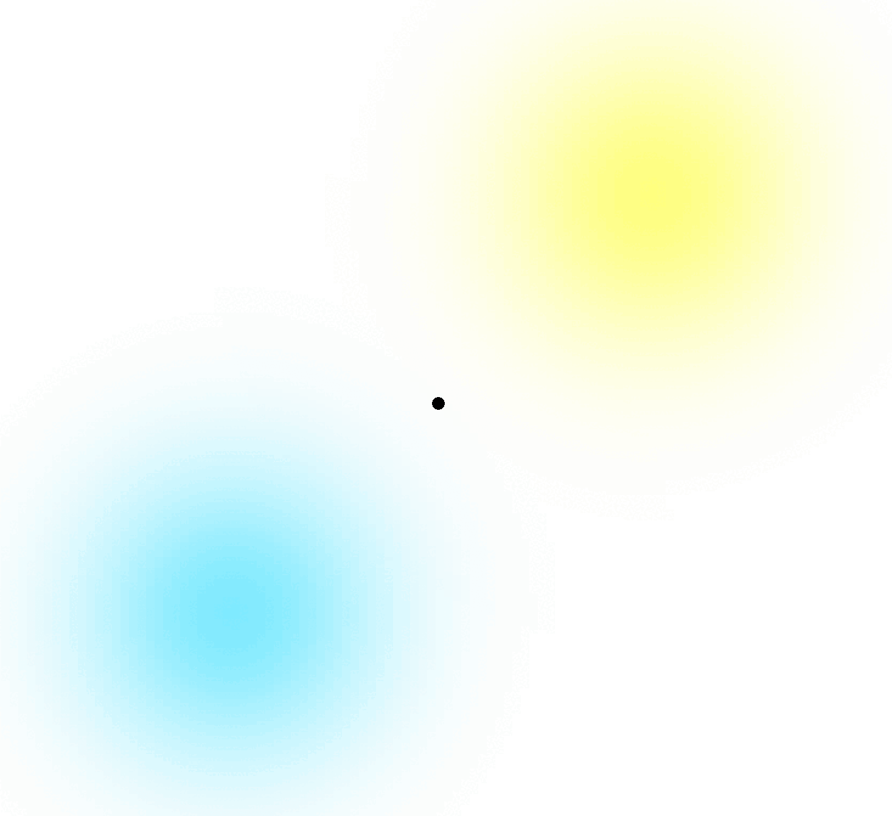

Programming abstraction
One program for the whole collective
Usually, each robot is programmed individually — a common example is ROS. With hundreds of robots, that does not scale.
With Aggregate Computing the collective is programmed as a whole, and the same program runs decentralized on every device, which repeatedly:
- senses local information;
- exchanges data with its neighbors;
- runs the same aggregate program;
- acts on its local result.
Local executions compose into a global behavior.

Main thesis contributions 2/5
Resource management

Adaptation

Main thesis contributions 4/5
Monitoring

Consensus

Future work
- Add the two missing building blocks: preemption and lifecycle, and permissions over collective behavior;
- Integrate the mechanisms into a CROS prototype in Collektive.
Make the swarm programmable as one system, while keeping its adaptation explicit and safe.